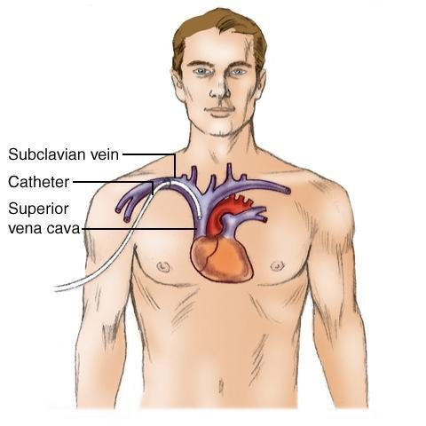
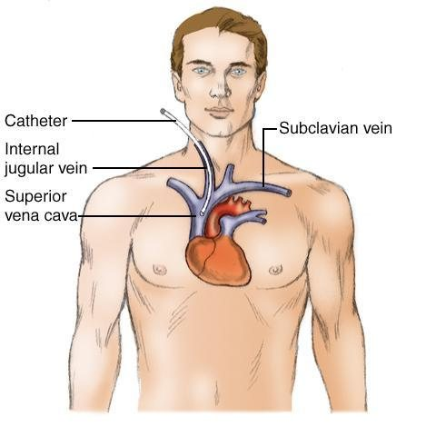
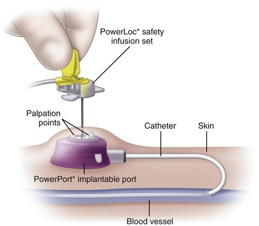

Week 2 · Topic 4
Central Venous Catheters
A CVC (central venous catheter) is any line whose tip lies in a large central vessel — usually the superior vena cava. There are four kinds, and the differences between them (how long they stay in, who can remove them, what a student can and can't do) come up constantly.
Why a Patient Needs a CVC
- TPN (total parenteral nutrition): a very hypertonic IV solution (10–20% dextrose, vs. 5% in a standard solution) that peripheral veins can't tolerate.
- Vesicant chemotherapy agents: drugs that cause serious tissue damage if they infiltrate — a central line avoids that risk. Many chemo patients also need long-term access, which a CVC provides.
- Long-term antibiotic therapy — e.g. weeks of IV antibiotics for endocarditis.
- Loss of peripheral access — a patient who's been stuck repeatedly with nothing left but small, fragile veins (a 24-gauge that blows the next day).
Non-Tunneled ("Deep") Lines
- Placed by the provider or an acute care nurse practitioner — not tunneled, so it's essentially a large-vessel IV stick.
- Inserted in the subclavian vein or the internal jugular (IJ).
- Up to 5 ports possible (2–3 is typical). 7–10 inches long. Tip usually rests in the superior vena cava.
- A chest X-ray is done after insertion — to confirm placement and rule out a pneumothorax.
- Short-term use only — not intended for home or ambulatory-clinic use.
- Can be removed by the RN.


Subclavian vs. IJ: subclavian risks nicking the pleura and causing a pneumothorax; IJ is a more direct shot to the heart and carries less of that risk, but the dressing tends not to stay put because the neck is so mobile. Neither is definitively "better" — it's often provider preference, though many nurses prefer subclavian simply because the dressing holds better.
Tunneled CVCs
- Placed by the surgeon, usually in the OR — tunneled through the subcutaneous tissue so the exit site is further down the chest than the actual insertion point, which adds stability and lowers the chance of accidental removal.
- Named types: Hickman, Groshong, Broviac.
- Used for frequent or prolonged infusion therapy — commonly seen on the oncology floor and for dialysis access. Can stay in for a long time.
- Advantage: no repeated needle sticks. Disadvantage: a prolonged break in skin integrity (ongoing infection risk).
- Irrigation and site-care protocols vary by agency policy.
- Discontinued by the provider only — the RN does not remove a tunneled CVC.
Implantable Ports (Portacath / PowerPort)

- Surgically implanted entirely under the subcutaneous tissue of the chest wall — no external tubing when not accessed, which patients often prefer for body image (some describe it as feeling like "a button" under the skin).
- Accessed with a special Huber needle through the round "donut" septum.
- Rated for up to 2,000 punctures in the chest, or 750 if placed in the arm, before it wears out.
- Used for patients needing IV therapy for a year or longer.
- When accessed, the needle is changed weekly; when not accessed, there's essentially no site care needed.
- Discontinued by the surgeon, via a small incision to remove the port.
PICC (Peripherally Inserted Central Catheter)
- Inserted peripherally — typically in the antecubital space — but it's still a central line, because the catheter is threaded up the vessel until the tip lies in the superior vena cava.
- 8–10 inches long. Placed at the bedside by specially trained PICC nurses. Can stay in place for several months.
- No blood draws or blood pressures in the arm with the PICC — risks impairing the infusion or damaging the catheter.
- Lower complication risk than a deep line overall — no pneumothorax risk, no unstable neck dressing.
- Dressing changes follow a set schedule per agency policy (e.g. done every Wednesday unless soiled).
- Complications: phlebitis, catheter occlusion.
- Can be removed by the RN.
General CVC Complications & CLABSI
- Shared risks across CVC types: bleeding at the site, air embolus, catheter occlusion/clot formation, and infection.
- Pneumothorax is specific to deep lines (subclavian especially), from the insertion process itself.
- CLABSI (central line-associated bloodstream infection) — bacteria enters at the insertion site; accounts for a large share of hospital-acquired infections and can make a patient critically ill (sepsis, even death).
- Dressings help prevent CLABSI: a stat-lock dressing secures the catheter and reduces the wiggling that widens the insertion site; a CHG (chlorhexidine gluconate)-impregnated dressing is used specifically to reduce infection risk.
Removing a Non-Tunneled CVC or PICC (RN Scope)
| Step | Why |
|---|---|
| Check the INR before pulling | Especially important if the patient is anticoagulated — rules out excessive bleeding risk. |
| Gather supplies, including a measuring tape | After removal, the catheter is measured to confirm the full length came out — nothing was left behind in the vessel. |
| Position the patient supine or in Trendelenburg | Positioning that supports the Valsalva maneuver and reduces air-embolism risk. |
| Have the patient bear down (Valsalva maneuver) as it's pulled | Prevents atmospheric air from being sucked into the large vessel during removal. |
| Apply pressure for 3–5 minutes, then an occlusive dressing | Standard post-removal site care. |
| Measure the catheter length removed; compare to the documented insertion length | Confirms nothing broke off and was left in the patient. |
Culturing the catheter tip after removal varies by agency — some facilities do it routinely, others rarely. A PICC is withdrawn the same careful way, but slower — inch by inch, since pulling too fast can trigger venous spasm.
Who Removes Which Line
| CVC Type | Who Removes It |
|---|---|
| Non-tunneled (deep line) | RN |
| PICC | RN |
| Tunneled (Hickman, Groshong, Broviac) | Provider only |
| Implantable port | Surgeon only |
Nursing Student Scope of Practice
One exception: a student may hang a secondary line (e.g. a medication) through an already-established primary line, with the instructor or RN present. You'll perform full CVC care once you're a licensed nurse — these limits exist for patient safety during clinical rotations.
Self-Test Flashcards
Click a card to flip it and check your answer.